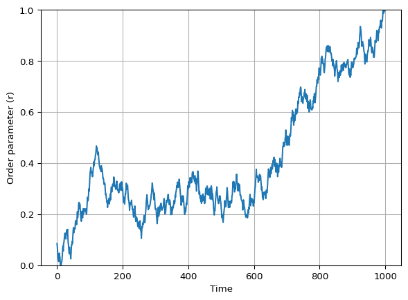

Vicsek Model
Interactive Animation (step-by-step)
In this chapter I will guide you to build an interactive Vicsek animation in Matplotlib, one step at a time.
You already have the Vicsek functions implemented (e.g. initialize_particles, vicsek_equations, vicsek_order_parameter).
Your job here is to assemble them into:
- a 2D particle animation (with a short tail),
- a live plot of the order parameter over time,
- and sliders to change parameters on the fly.
What you will build
A \(2 \times 2\) layout:
- Top-left: particle positions (with a tail).
- Top-right: order parameter over time.
- Bottom-left: sliders.
- Bottom-right: order parameter vs noise (a crude “phase diagram”) as you explore.
Keep it incremental: Run your code after each step. If something breaks, you only have one new thing to debug.
Imports and Model Functions
Create a new script named vicsek_animation.py. At the end of this page you will have a complete version.
Fill in the missing imports:
import sys
import matplotlib.pyplot as plt
import matplotlib.animation as animation
import numpy as np
from matplotlib.axes import Axes
# make sure Python can find your package/module
sys.path.append(".")
# import Vicsek utilities from your project
from amlab.collective_motion.vicsek import initialize_particles, vicsek_equations, vicsek_order_parameter
Common import issues
- If you get
ModuleNotFoundError, you likely needsys.path.append(".")(or adjust it to your repo root). - Prefer importing from your package (e.g.
amlab...) rather than relative imports.
The Main Function
We will put everything inside a function so you can run it with different dt.
Create a function skeleton and choose parameter defaults.
def run_simulation(dt: float = 1.0) -> None:
"""Run an interactive Vicsek animation (Matplotlib)."""
# TODO: choose defaults
num_boids =
noise_eta =
box_size =
radius_interaction =
v0 =
# Sliding window length for order parameter plot
ORDER_WINDOW = 3000
# Tail length for trajectory visualization
TAIL_LEN = 20
# TODO: initialize the state (xy, theta)
# store order parameter history
ls_order_param = []
# store explored noise->order mapping
dict_noise = {}
# We stop here for now.
return
Why a sliding window?
If you store the full time series, your plot and memory will grow forever.
A fixed-length list (window) gives you: - stable performance, - and a plot that focuses on recent behavior.
Create the Figure Layout
We want a large space for particles, and a smaller area for sliders + extra diagnostics.
Create the subplots and name the axes.
def make_figure():
# Create a 2x2 grid
fig, axs = plt.subplots(
2, 2,
figsize=(12, 8),
height_ratios=[4, 1], # top row larger than bottom row
)
ax_plane: Axes = axs[0, 0]
ax_order: Axes = axs[0, 1]
ax_sliders: Axes = axs[1, 0]
ax_noise: Axes = axs[1, 1]
# Sliders live in an empty axis
ax_sliders.axis("off")
return fig, ax_plane, ax_order, ax_sliders, ax_noiseDraw Particles
In order to convey the movement of the particles, we want them to look like “tadpoles”: a big head with a smaller tail. In practice, we will be plotting their current position as the “head”, using a bigger marker, and their recent trajectory as the “tail”, using many small points. This will show the direction of movement and give a better sense of the dynamics. We will use two artists:
- one for the tail (many tiny points),
- one for the current positions (bigger markers).
Translating this to code, we will - create xy_tail with shape (2, N, TAIL_LEN), and - create the two Line2D artists with ax_plane.plot(...).
def init_particles_plot(ax_plane: Axes, xy: np.ndarray, box_size: float, tail_len: int):
# build a tail tensor by repeating xy across a third axis
xy_tail = np.repeat(xy[:, :, np.newaxis], tail_len, axis=2)
# tail (small grey points)
(plt_particles,) = ax_plane.plot(
xy_tail[0].flatten(), xy_tail[1].flatten(),
linestyle="", marker=".", markersize=2, color="grey"
)
# current positions (bigger black circles)
(plt_current,) = ax_plane.plot(
xy[0], xy[1],
linestyle="", marker="o", markersize=3, color="black"
)
# set plot limits
ax_plane.set_xlim(0, box_size)
ax_plane.set_ylim(0, box_size)
ax_plane.set_aspect("equal")
return xy_tail, plt_particles, plt_current
Tail trick (fast and simple)
Store the last TAIL_LEN positions:
- shift the tensor with
np.roll(...), - write the newest positions into the last slice.
This avoids creating new arrays each frame.
Initialize the Order-Parameter Plot
The next plot will show the order parameter \(r\) over time.
We will update the line data at each animation frame, using the ls_order_param list to store the recent history of \(r\).
Create an empty line in ax_order and set labels/limits.
def init_order_plot(ax_order: Axes, order_window: int):
# TODO: create the line artist
# HINT: this is similar to how you created the particle artists,
# but with empty data
# TODO: set axes cosmetics
# limits, labels, grid
# TODO: return relevant variables
Solved
def init_order_plot(ax_order: Axes, order_window: int):
(line_order_param,) = ax_order.plot([], [])
ax_order.set_xlim(0, order_window - 1)
ax_order.set_ylim(0, 1)
ax_order.set_xlabel("Time")
ax_order.set_ylabel("Order parameter (r)")
ax_order.grid(True)
return line_order_paramInitialize the Noise Diagnostic Plot
In this plot we will track how the order parameter \(r\) changes as we explore different noise levels \(\eta\) with the slider. Visually, we expect to see a curve that starts near \(r=1\) at low noise, and drops towards \(r=0\) as noise increases. See Figure 2 for an example (using mock data).

To build this plot, we will maintain a dictionary dict_noise that maps noise levels to the recent average of the order parameter. Each time we update the animation, we will compute the recent average of \(r\) and update this dictionary with the current noise level. Then we will set the line data for the noise plot using the items in this dictionary.
[ r ]
Initialize an empty line (red markers).
def init_noise_plot(ax_noise: Axes):
# TODO: create the line artist
# TODO: set limits and labels (match your slider range)
# return::: {.callout-tip collapse=“true”} ## Solved
def init_noise_plot(ax_noise: Axes):
(line_noise,) = ax_noise.plot([], [], color="red", marker="o", linestyle="--")
ax_noise.set_xlim(0, 5)
ax_noise.set_ylim(0, 1)
ax_noise.set_xlabel("Noise (eta)")
ax_noise.set_ylabel("Order param (r)")
return line_noiseWrite the Animation Update Function
This is the core loop:
- advance the Vicsek dynamics by one step (
vicsek_equations) - update
xy_tail - update the particle artists
- update order-parameter history
ls_order_paramand its plot - update the noise diagnostic
dict_noiseand its plot
Use this checklist:
You can follow the structure of the update_animation function below, which includes comments for each step.
def update_animation(frame: int):
nonlocal xy, xy_tail, theta, noise_eta, v0, radius_interaction, box_size, dict_noise, ls_order_param
# TODO: advance the Vicsek equations
# TODO: update the tail tensor
# TODO: update the particle artists with set_data
# TODO: update the order parameter history and plot
# TODO: compute a recent average and update dict_noise
# TODO: update the noise diagnostic plot with set_data
return (plt_particles, plt_current, line_order_param, line_noise)Tip: blitting requires you to return artists If you set blit=True, your update function must return an iterable of the artists that changed, as shown above. If you forget to return them, the animation will run but the plot will not update (it will look frozen).
Move the function update_animation inside run_simulation so it can access the state variables with nonlocal.
Solved
def update_animation(frame: int):
nonlocal \
xy, \
xy_tail, \
theta, \
noise_eta, \
v0, \
radius_interaction, \
box_size, \
dict_noise, \
ls_order_param
xy, theta = vicsek_equations(
xy,
theta,
v0=v0,
dt=dt,
radius_interaction=radius_interaction,
box_size=box_size,
noise=noise_eta,
)
# Update tails
xy_tail = np.roll(xy_tail, shift=-1, axis=2)
xy_tail[:, :, -1] = xy
plt_particles.set_data(xy_tail[0].flatten(), xy_tail[1].flatten())
plt_current.set_data(xy[0], xy[1])
# Update order parameter
ls_order_param.append(vicsek_order_parameter(theta))
ls_order_param = ls_order_param[-ORDER_WINDOW:]
x_vals = np.arange(len(ls_order_param))
line_order_param.set_data(x_vals, ls_order_param)
# Average the last ORDER_WINDOW//3 values to get the order parameter (similar to Couzin)
order_param = np.mean(ls_order_param[-ORDER_WINDOW // 3 :])
dict_noise[noise_eta] = order_param
dict_noise = dict(sorted(dict_noise.items()))
if dict_noise:
line_noise.set_data(*zip(*dict_noise.items()))
else:
line_noise.set_data([], [])
return (plt_particles, plt_current, line_order_param, line_noise)Create the Animation Object
Matplotlib uses FuncAnimation. Inside run_simulation, after defining update_animation, create the animation object:
ani = animation.FuncAnimation(fig, update_animation, interval=0, blit=True)interval=0makes it as fast as your computer can handle.- You can set a larger interval (e.g. 20 ms) to reduce CPU usage.
Add Sliders
We want sliders for:
- Number of boids \(N\) (special: requires reinitializing particles).
- Interaction radius \(r\).
- Noise \(\eta\).
- Speed \(v_0\).
- Box size \(L\).
Create Slider Axes
We will create little inset axes inside ax_sliders:
def make_slider_axes(ax_sliders: Axes):
ax_sliders.axis("off")
ax_num_boids = ax_sliders.inset_axes([0.0, 1.2, 0.8, 0.1])
ax_radius_interaction = ax_sliders.inset_axes([0.0, 1.0, 0.8, 0.1])
ax_noise_eta = ax_sliders.inset_axes([0.0, 0.8, 0.8, 0.1])
ax_v0 = ax_sliders.inset_axes([0.0, 0.6, 0.8, 0.1])
ax_box_size = ax_sliders.inset_axes([0.0, 0.4, 0.8, 0.1])
return ax_num_boids, ax_radius_interaction, ax_noise_eta, ax_v0, ax_box_sizeCreate the Slider Widgets
Matplotlib’s Slider lives in matplotlib.widgets. Import it and create the sliders.
from matplotlib.widgets import Slider
def make_sliders(
*,
ax_num_boids,
ax_radius_interaction,
ax_noise_eta,
ax_v0,
ax_box_size,
num_boids: int,
radius_interaction: float,
noise_eta: float,
v0: float,
box_size: float,
):
# TODO: define the sliders with appropriate ranges and initial values
return slider_num_boids, slider_radius_interaction, slider_noise_eta, slider_v0, slider_box_sizeSlider Callbacks
We need two callbacks:
- A general callback that updates parameters without reinitializing particles.
- A special callback for
num_boidsthat reinitializes the system and updates the tail tensor.
Implement both callbacks and connect them with on_changed.
def connect_slider_callbacks(
*,
ani,
slider_radius_interaction,
slider_noise_eta,
slider_v0,
slider_box_size,
slider_num_boids,
ax_plane: Axes,
):
# This function will depend on your state variables.
# The simplest approach: define the callbacks INSIDE run_simulation
# so they can use `nonlocal` to access xy, theta, etc.
...
Tip: pause the animation during parameter changes
Inside a callback:
ani.event_source.stop()
# update parameters / reinit
ani.event_source.start()This reduces glitches while you resize arrays or change plot limits.
Put it all together (full script)
At this point you have built every piece.
Below is a sample of how your run_simulation function might look with all the pieces assembled.
Full
run_simulation()
def run_simulation(dt: float = 1.0) -> None:
# Parameters
num_boids = 100
noise_eta = 0.5
box_size = 10.0
radius_interaction = 1.0
v0 = 0.03
# Initialize state
xy, theta = initialize_particles(num_boids, box_size)
# Order parameter history and noise diagnostic
ls_order_param = []
dict_noise = {}
# Create figure and axes
fig, ax_plane, ax_order, ax_sliders, ax_noise = make_figure()
# Initialize plots
xy_tail, plt_particles, plt_current = init_particles_plot(ax_plane, xy, box_size, tail_len=20)
line_order_param = init_order_plot(ax_order, order_window=3000)
line_noise = init_noise_plot(ax_noise)
# Create sliders
ax_num_boids, ax_radius_interaction, ax_noise_eta, ax_v0, ax_box_size = make_slider_axes(ax_sliders)
slider_num_boids, slider_radius_interaction, slider_noise_eta, slider_v0, slider_box_size = make_sliders(
ax_num_boids,
ax_radius_interaction,
ax_noise_eta,
ax_v0,
ax_box_size,
num_boids,
radius_interaction,
noise_eta,
v0,
box_size,
)
# Define the animation update function (see previous step for details)
def update_animation(frame: int):
...
# Create the animation object
ani = animation.FuncAnimation(fig, update_animation, interval=0, blit=True)
# Connect slider callbacks
connect_slider_callbacks(
ani=ani,
slider_radius_interaction=slider_radius_interaction,
slider_noise_eta=slider_noise_eta,
slider_v0=slider_v0,
slider_box_size=slider_box_size,
slider_num_boids=slider_num_boids,
ax_plane=ax_plane,
)
plt.show()The full script with all functions defined is available in vicsek_animation.py in the repo. You can run it and experiment with the sliders to see how the Vicsek model behaves under different conditions.
Important: For your script to work, remember to call the run_simulation() function at the end of your script:
if __name__ == "__main__":
run_simulation()Checklist (Debugging)
If your animation is blank:
- Did you return the artists in
update_animation? - Did you set axis limits (
set_xlim,set_ylim)? - Are
xyandthetaupdated each frame? - Are you calling
plt.show()at the end ofrun_simulation()? - Are you calling
run_simulation()at the end of your script?
If sliders do nothing:
- Did you call
slider.on_changed(...)? - Are you updating the right variables (
nonlocal)?
Optional Extensions
- Color by heading: map
thetato a colormap for the current points. - Quiver plot: show velocity vectors for a subset of particles.
- Pause button: add a Matplotlib
Buttonwidget.